| [ Team LiB ] |
|
9.4 IMC-Based Feedback Design for Processes with a Time DelayIn order to arrive at a PID equivalent form for processes with a time delay, we must make some approximation to the dead time. (Please note that we do not use an approximation for dead time when implementing the "pure" IMC strategy developed in Chapter 8. We are doing this only for the IMC-based PID procedure presented in this chapter; this is only done to yield a PID-type controller.) We use either a first-order Padé approximation for dead time or neglect dead time entirely and use the first-order transfer function results. First-Order + Dead TimeSince first-order + dead time is the most common representation of chemical process dynamics, the PID equivalent form developed here is useful for a large number of process control loops. We develop the procedure by way of example. Example 9.3: IMC-Based PID Design for a First-Order + Dead Time ProcessFind the PID controller which approximates IMC for a first-order + time-delay process 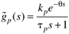
Now, find the PID equivalent. Recall that 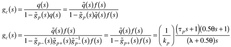 We can expand the numerator term to find 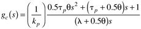 We can multiply Equation (9.19) by (tp + 0.5)/(q/tp + 0.5q) to find the PID parameters 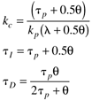 The IMC-based PID controller design procedure has resulted in a PID controller, when the process is first-order + dead time. Remember that a Padé approximation for dead time was used in this development, meaning that the filter factor (l) cannot be made arbitrarily small; therefore, there will be performance limitations to the IMC-based PID strategy that do not occur in the IMC strategy. Rivera et al. (1986) recommend that l > 0.8q because of the model uncertainty due to the Padé approximation. In Example 9.3 the all-pass formulation was not used. The reader should show that the use of an all-pass in the factorization will lead to a PID controller in series with a first-order lag. The parameters, in this case, are shown as the first entry in Table 9-2. Morari and Zafiriou (1989) recommend l > 0.25q for the PID + lag formulation. The third and fourth entries neglect the time delay in forming the PI controller. Summary of PI(D) Control of First-Order + Time-Delay ProcessesDifferent assumptions are used to derive the PI and PID controllers shown in Table 9-2. A zeroth-order Padé approximation leads to a PI controller while a first-order Padé approximation leads to PID + lag (when an all-pass filter is used) and PID (when the all-pass is not used) controllers. Generally, the PID + lag controller will be easier to tune for robustness and will certainly be less sensitive to noise than the PID controller. The PID + filter perfomance is almost identical to the "pure" IMC. This shows that the powerful IMC framework can be used to design PID-type controllers that can be implemented in industrial processes using existing (PID) control equipment. Integrator + Dead TimeFor processes where the time constant is dominant, the step response behavior can be approximated as integrator + dead time, as characterized by the following transfer function. 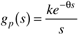 Here, assume that a Taylor series approximation for dead time is used. Also, the special filter form for integrating systems is used. 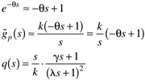 Using the IMC-based PID procedure, 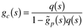 the reader should show that a PI controller results with the following parameters: 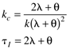 Gain + Dead TimeFor processes where the time delay is dominant, the step response behavior can be approximated as gain + dead time, as characterized by the following transfer function. 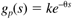 Using a second-order Padé approximation for the time delay, 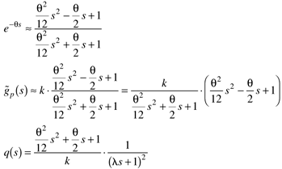 the reader should find that a PID + filter controller results, with 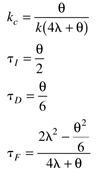 with the condition that 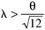. |
| [ Team LiB ] |
|